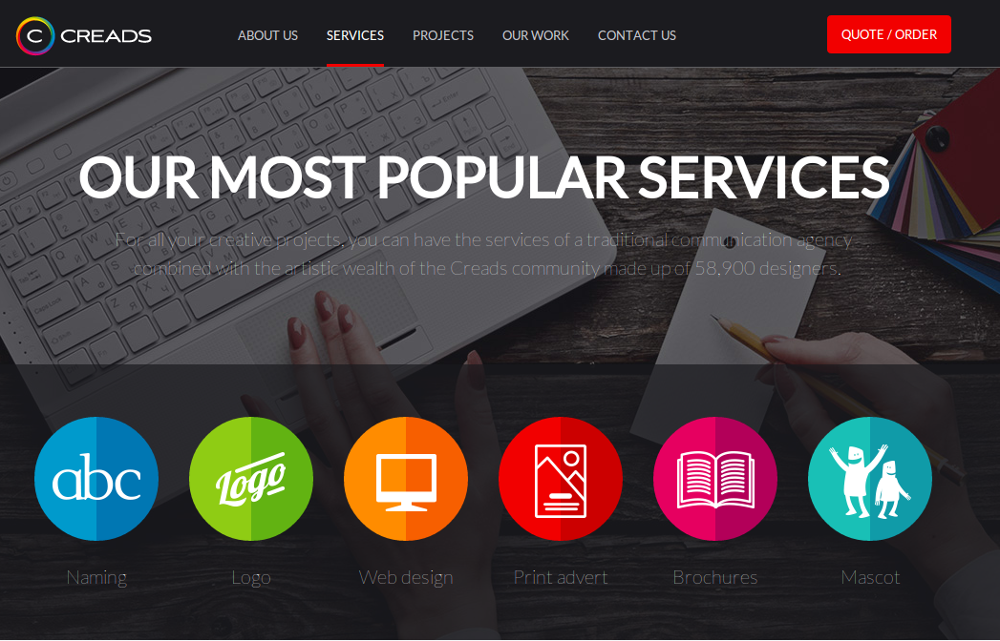
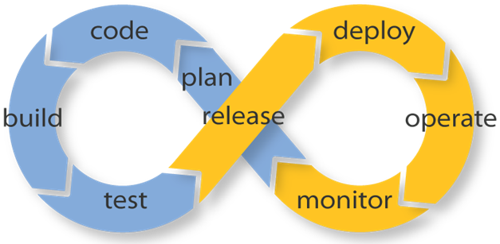
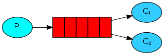

Stage M2 Jolicode
Développeur Web dans une startup
Présenté par Aurélien David
Présentation
var aurelien = {
age: 23,
city: 'Champigny-sur-Marne',
studies: 'Efrei - IRV',
company: 'JoliCode',
languages: ['PHP', 'JavaScript'],
frameworks: ['Symfony','Node.js','React']
};
Résumer un stage en 30 minutes
On y croit !
Découvrir JoliCode et Cap-Collectif
Améliorer la qualité du workflow et l'adapter à l'équipe !
Etudier les fonctionnalités réalisées
Aller plus loin…
What's JoliCode ?
in 30 secondes

The Concept of Cap-Collectif
in 30 secondes
History of Cap-Collectif
- 2007 : Establishment of the Agency
- 2008 : Start of activity
- 2013 - 2014 : Fundraising 3 million euros
- April 1st : Launch of the V2
- March 02 : Beginning of my internship ! :-)
Courage!
Ça va bien se passer
L'équipe est cool*
*En plus on a des Macs !
Qu'est ce qu'on code ?
- Un front ultra complexe !
- Un back
- Le tout en préparant l'internationalisation !
Comment on fait ça ?
- PHP / Symfony : plus de 8500 fichiers !
- JavaScript
- Git
- Pas d'intégration continue ヽ(ﾟДﾟ)ﾉ
Et la méthodologie dans tout ça ?
- 1er mois : Gestionnaire de tickets
- Ensuite : Scrum (ouf!)
Hello Integration Continue
Soulever le voile
Pourquoi des tests ?
- Eviter les bugs de régression
- Plus peur de modifier du code critique !
Déploiement continu

Mettre en production n'est plus un événement !
Le sprint capco
- On joue au Poker et on plannifie
- Choix libre des tâches à coder
- On visualise l'avancement avec le Scrum Board
- On fait le point tous les jours
Mon premier Sprint
- On communique avec les dirigeants
- On debrief entre nous !
- Et on choisit le prochain Scrum Master
Et si on allait plus loin ?
Quelques propositions d'améliorations pragmatiques...
Pour réduire le temps de développement des changements !
Pair-Programming
Facilite l'insertion des nouveaux au projet !
100 % Code Review
Résultats
Déjà utilisés en production !
Formulaire dynamique
Composants Form et Validator
+ de 50 combinaisons possibles*
Envoi de mails en asynchrone
Avec RabbitMQ

Un début d'architecture orientée services
découpée et scalable
Environement de développement
Vagrant et Puphpet
Virtualisé et installable en ~1 heure…
Totalement automatique !
Bien d'autres…
Migrations de données
Landing pages
Echéancier de paiements
Acquis
- Context d'entreprise
- Communication technique
- Importance de l'expérimentation
Avis perso
Sentiment d'avoir été utile : Plateforme Saas...
Rencontre avec des passionés
Conscient de l'impact de la dette technique
Conclusion
Envie de continuer à faire avancer Cap-Collectif
et de créer ma propre startup au sein de JoliCode !
En applicant les idées développées pendant le stage...